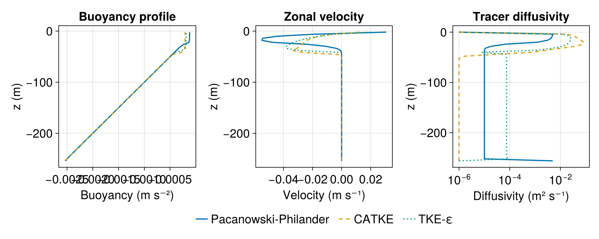

Implementing Turbulence Closures
This guide shows how to implement a turbulence closure in Oceananigans. We'll build PacanowskiPhilanderVerticalDiffusivity, a Richardson number-based mixing parameterization from Pacanowski and Philander (1981).
The Pacanowski-Philander formulation computes eddy viscosity $\nu$ and diffusivity $\kappa$ as
\[\nu = \nu_0 + \frac{\nu_1}{(1 + c \, Ri)^n}, \quad \kappa = \kappa_0 + \frac{\nu_1}{(1 + c \, Ri)^{n+1}}\]
where $Ri = N^2 / S^2$ is the gradient Richardson number (stratification over shear squared).
Julia's multiple dispatch lets us implement this closure anywhere—a script, a package, or within Oceananigans itself—and it will integrate seamlessly with NonhydrostaticModel and HydrostaticFreeSurfaceModel.
Overview
Turbulence closures add diffusive fluxes to the momentum and tracer equations. The key components are:
- Abstract types for dispatch
- Diffusivity computation before each time step
- Flux functions that use precomputed diffusivities
- Time discretization (explicit or vertically implicit)
All closures inherit from AbstractTurbulenceClosure{TimeDiscretization, RequiredHalo}. For scalar diffusivities, we use AbstractScalarDiffusivity{TD, Formulation, RequiredHalo} where Formulation is VerticalFormulation, HorizontalFormulation, or ThreeDimensionalFormulation. See the Turbulence closures documentation for a list of built-in closures.
Step-by-step implementation
Step 1: Define the struct
The closure struct holds its parameters:
using Oceananigans.TurbulenceClosures: AbstractScalarDiffusivity, VerticalFormulation
struct PacanowskiPhilanderVerticalDiffusivity{TD, FT} <: AbstractScalarDiffusivity{TD, VerticalFormulation, 1}
ν₀ :: FT # Background viscosity
ν₁ :: FT # Shear-driven viscosity coefficient
κ₀ :: FT # Background diffusivity
c :: FT # Richardson number scaling coefficient
n :: FT # Exponent for viscosity
maximum_diffusivity :: FT
maximum_viscosity :: FT
endKey points:
- Type parameters:
TDis the time discretization,FTis the float type - Supertype:
AbstractScalarDiffusivity{TD, VerticalFormulation, 1}indicates:- This closure uses scalar (not tensor) diffusivities
- It only acts in the vertical direction (
VerticalFormulation) - It requires a halo size of 1
- All fields are concretely typed: This is essential for type stability and GPU performance
Step 2: Create the constructor
Provide a user-friendly constructor with sensible defaults:
using Oceananigans: VerticallyImplicitTimeDiscretization
function PacanowskiPhilanderVerticalDiffusivity(time_discretization = VerticallyImplicitTimeDiscretization(),
FT = Float64;
ν₀ = 1e-4, ν₁ = 1e-2, κ₀ = 1e-5,
c = 5.0, n = 2.0,
maximum_diffusivity = Inf,
maximum_viscosity = Inf)
TD = typeof(time_discretization)
return PacanowskiPhilanderVerticalDiffusivity{TD, FT}(
convert(FT, ν₀),
convert(FT, ν₁),
convert(FT, κ₀),
convert(FT, c),
convert(FT, n),
convert(FT, maximum_diffusivity),
convert(FT, maximum_viscosity))
end
# Test it works
PacanowskiPhilanderVerticalDiffusivity()Main.PacanowskiPhilanderVerticalDiffusivity{VerticallyImplicitTimeDiscretization, Float64}(0.0001, 0.01, 1.0e-5, 5.0, 2.0, Inf, Inf)Important conventions:
- The first positional argument is
time_discretization - The second positional argument is the float type
FT - All physics parameters are keyword arguments
- Always
converttoFTto ensure type consistency
Step 3: Define locations and accessors
Diffusivities live at specific grid locations. Vertical diffusivities that multiply vertical gradients belong at (Center, Center, Face). We also define accessors that extract the viscosity and diffusivity from the precomputed fields:
using Oceananigans.Grids: Center, Face
using Oceananigans.TurbulenceClosures
const PPVD = PacanowskiPhilanderVerticalDiffusivity
## Locations
@inline TurbulenceClosures.viscosity_location(::PPVD) = (Center(), Center(), Face())
@inline TurbulenceClosures.diffusivity_location(::PPVD) = (Center(), Center(), Face())
## Accessors (extract from precomputed fields)
@inline TurbulenceClosures.viscosity(::PPVD, diffusivities) = diffusivities.νz
@inline TurbulenceClosures.diffusivity(::PPVD, diffusivities, id) = diffusivities.κzThe id argument is the tracer index, useful for closures with tracer-specific diffusivities.
Step 4: Build closure fields
Closures that precompute diffusivities need storage Fields. Define build_closure_fields to create them:
using Oceananigans.Fields: Field
function TurbulenceClosures.build_closure_fields(grid, clock, tracer_names, bcs, closure::PPVD)
κz = Field{Center, Center, Face}(grid)
νz = Field{Center, Center, Face}(grid)
return (; κz, νz)
endThe returned NamedTuple becomes model.closure_fields and is passed to compute_diffusivities! and flux functions.
Step 5: Implement diffusivity computation
The core of the closure is compute_diffusivities!, which updates diffusivity fields each time step. First, helper functions for the Richardson number:
using Oceananigans.BuoyancyFormulations: ∂z_b
using Oceananigans.Operators: ℑxᶜᵃᵃ, ℑyᵃᶜᵃ, ∂zᶠᶜᶠ, ∂zᶜᶠᶠ
## Square a function evaluation at a point
@inline ϕ²(i, j, k, grid, ϕ, args...) = ϕ(i, j, k, grid, args...)^2
## Compute vertical shear squared at (Center, Center, Face)
@inline function shear_squaredᶜᶜᶠ(i, j, k, grid, velocities)
∂z_u² = ℑxᶜᵃᵃ(i, j, k, grid, ϕ², ∂zᶠᶜᶠ, velocities.u)
∂z_v² = ℑyᵃᶜᵃ(i, j, k, grid, ϕ², ∂zᶜᶠᶠ, velocities.v)
return ∂z_u² + ∂z_v²
end
## Compute Richardson number at (Center, Center, Face)
@inline function Riᶜᶜᶠ(i, j, k, grid, velocities, buoyancy, tracers)
S² = shear_squaredᶜᶜᶠ(i, j, k, grid, velocities)
N² = ∂z_b(i, j, k, grid, buoyancy, tracers)
S²_min = eps(eltype(grid))
Ri = max(zero(grid), N²) / max(S², S²_min)
return Ri
endNow the main function and GPU kernel:
using Oceananigans.Utils: launch!
using Oceananigans.TurbulenceClosures: buoyancy_tracers, buoyancy_force
using KernelAbstractions: @kernel, @index
function TurbulenceClosures.compute_diffusivities!(diffusivities, closure::PPVD, model; parameters = :xyz)
arch = model.architecture
grid = model.grid
tracers = buoyancy_tracers(model)
buoyancy = buoyancy_force(model)
velocities = model.velocities
launch!(arch, grid, parameters,
compute_pp_diffusivities!, diffusivities, grid, closure, velocities, tracers, buoyancy)
return nothing
end
@kernel function compute_pp_diffusivities!(diffusivities, grid, closure, velocities, tracers, buoyancy)
i, j, k = @index(Global, NTuple)
Ri = Riᶜᶜᶠ(i, j, k, grid, velocities, buoyancy, tracers)
## Extract parameters
ν₀ = closure.ν₀
ν₁ = closure.ν₁
κ₀ = closure.κ₀
c = closure.c
n = closure.n
## Pacanowski-Philander formulas
denominator = 1 + c * Ri
νz = ν₀ + ν₁ / denominator^n
κz = κ₀ + ν₁ / denominator^(n + 1)
## Apply maximum limits
νz = min(νz, closure.maximum_viscosity)
κz = min(κz, closure.maximum_diffusivity)
@inbounds diffusivities.νz[i, j, k] = νz
@inbounds diffusivities.κz[i, j, k] = κz
endGPU compatibility rules for kernels:
- Use
@kernelfrom KernelAbstractions.jl - Use
@index(Global, NTuple)to get indices - Use
@inboundsfor array access - Never use
if/elsewith different types—useifelseinstead - Never throw errors—GPU kernels cannot print or throw
- Avoid allocations
Step 6: Implement show methods
Good display methods help users understand their closures:
using Oceananigans.Utils: prettysummary
Base.summary(closure::PPVD{TD}) where TD =
string("PacanowskiPhilanderVerticalDiffusivity{$TD}")
function Base.show(io::IO, closure::PPVD)
print(io, summary(closure), ":\n")
print(io, "├── ν₀: ", prettysummary(closure.ν₀), '\n')
print(io, "├── ν₁: ", prettysummary(closure.ν₁), '\n')
print(io, "├── κ₀: ", prettysummary(closure.κ₀), '\n')
print(io, "├── c: ", prettysummary(closure.c), '\n')
print(io, "└── n: ", prettysummary(closure.n))
end
# Test it
PacanowskiPhilanderVerticalDiffusivity()PacanowskiPhilanderVerticalDiffusivity{VerticallyImplicitTimeDiscretization}:
├── ν₀: 0.0001
├── ν₁: 0.01
├── κ₀: 1.0e-5
├── c: 5.0
└── n: 2.0Simulating a wind-driven boundary layer
Let's test the closure by comparing it with CATKEVerticalDiffusivity and TKEDissipationVerticalDiffusivity in a wind-driven boundary layer simulation.
First, we set up the simulation parameters:
using Oceananigans
using Oceananigans.Units
Lz = 256 # Domain depth (m)
Nz = 64 # Vertical resolution
N² = 1e-5 # Background stratification (s⁻²)
τˣ = -1e-4 # Surface kinematic stress (m² s⁻²), i.e. wind stress / density
Jᵇ = 0 # Surface buoyancy flux (m² s⁻³)
f = 1e-4 # Coriolis parameter (s⁻¹)
stop_time = 2daysWe'll create a helper function to set up and run simulations:
function run_boundary_layer(closure; stop_time)
grid = RectilinearGrid(size=Nz, z=(-Lz, 0), topology=(Flat, Flat, Bounded))
u_bcs = FieldBoundaryConditions(top = FluxBoundaryCondition(τˣ))
b_bcs = FieldBoundaryConditions(top = FluxBoundaryCondition(Jᵇ))
model = HydrostaticFreeSurfaceModel(grid;
closure,
buoyancy = BuoyancyTracer(),
tracers = :b,
coriolis = FPlane(f=f),
boundary_conditions = (u=u_bcs, b=b_bcs))
set!(model, b = z -> N² * z) # linear stratification
simulation = Simulation(model; Δt=10minutes, stop_time)
conjure_time_step_wizard!(simulation, cfl=0.5, max_Δt=10minutes)
run!(simulation)
return model
endRun all three closures:
## Run with Pacanowski-Philander
pp_closure = PacanowskiPhilanderVerticalDiffusivity(ν₁=5e-3, c=5.0)
model_pp = run_boundary_layer(pp_closure; stop_time)
## Run with CATKE
catke_closure = CATKEVerticalDiffusivity()
model_catke = run_boundary_layer(catke_closure; stop_time)
## Run with TKE-Dissipation (k-ε style)
tked_closure = TKEDissipationVerticalDiffusivity()
model_tked = run_boundary_layer(tked_closure; stop_time)[ Info: Initializing simulation...
[ Info: ... simulation initialization complete (675.802 ms)
[ Info: Executing initial time step...
[ Info: ... initial time step complete (5.470 seconds).
[ Info: Simulation is stopping after running for 8.490 seconds.
[ Info: Simulation time 2 days equals or exceeds stop time 2 days.
[ Info: Initializing simulation...
[ Info: ... simulation initialization complete (98.597 ms)
[ Info: Executing initial time step...
[ Info: ... initial time step complete (3.872 seconds).
[ Info: Simulation is stopping after running for 4.067 seconds.
[ Info: Simulation time 2 days equals or exceeds stop time 2 days.
[ Info: Initializing simulation...
[ Info: ... simulation initialization complete (96.135 ms)
[ Info: Executing initial time step...
[ Info: ... initial time step complete (4.492 seconds).
[ Info: Simulation is stopping after running for 4.695 seconds.
[ Info: Simulation time 2 days equals or exceeds stop time 2 days.Let's visualize the resulting boundary layer profiles:
using CairoMakie
fig = Figure(size=(1000, 400))
z_pp = znodes(model_pp.tracers.b)
z_catke = znodes(model_catke.tracers.b)
z_tked = znodes(model_tked.tracers.b)
## Buoyancy profiles
ax1 = Axis(fig[1, 1], xlabel="Buoyancy (m s⁻²)", ylabel="z (m)",
title="Buoyancy profile")
lpp = lines!(ax1, interior(model_pp.tracers.b, 1, 1, :), z_pp,
label="Pacanowski-Philander", linewidth=2)
lcatke = lines!(ax1, interior(model_catke.tracers.b, 1, 1, :), z_catke,
label="CATKE", linewidth=2, linestyle=:dash)
ltked = lines!(ax1, interior(model_tked.tracers.b, 1, 1, :), z_tked,
label="TKE-Dissipation", linewidth=2, linestyle=:dot)
## Velocity profiles
ax2 = Axis(fig[1, 2], xlabel="Velocity (m s⁻¹)", ylabel="z (m)",
title="Zonal velocity")
lines!(ax2, interior(model_pp.velocities.u, 1, 1, :), z_pp,
label="PP", linewidth=2)
lines!(ax2, interior(model_catke.velocities.u, 1, 1, :), z_catke,
label="CATKE", linewidth=2, linestyle=:dash)
lines!(ax2, interior(model_tked.velocities.u, 1, 1, :), z_tked,
label="TKE-ϵ", linewidth=2, linestyle=:dot)
## Diffusivity profiles
ax3 = Axis(fig[1, 3], xlabel="Diffusivity (m² s⁻¹)", ylabel="z (m)",
title="Tracer diffusivity", xscale=log10)
z_face_pp = znodes(model_pp.closure_fields.κz)
κ_pp = interior(model_pp.closure_fields.κz, 1, 1, :)
κ_pp_plot = max.(κ_pp, 1e-6) ## Avoid log of zero
lines!(ax3, κ_pp_plot, z_face_pp, label="PP", linewidth=2)
z_face_catke = znodes(model_catke.closure_fields.κc)
κ_catke = interior(model_catke.closure_fields.κc, 1, 1, :)
κ_catke_plot = max.(κ_catke, 1e-6)
lines!(ax3, κ_catke_plot, z_face_catke, label="CATKE", linewidth=2, linestyle=:dash)
z_face_tked = znodes(model_tked.closure_fields.κu)
κ_tked = interior(model_tked.closure_fields.κu, 1, 1, :)
κ_tked_plot = max.(κ_tked, 1e-6)
lines!(ax3, κ_tked_plot, z_face_tked, label="TKE-ε", linewidth=2, linestyle=:dot)
fig[2, :] = Legend(fig, [lpp, lcatke, ltked], ["Pacanowski-Philander", "CATKE", "TKE-ε"],
orientation = :horizontal, tellwidth = false, framevisible = false)
rowsize!(fig.layout, 2, Auto(0.15)) # adjust legend row height
rowgap!(fig.layout, 10)
fig
The comparison reveals differences in how the closures parameterize mixing:
- Pacanowski-Philander uses a local Richardson number formulation, producing smooth diffusivity profiles that respond directly to the local shear and stratification
CATKEVerticalDiffusivityuses a prognostic TKE equation that captures non-local effects and produces sharper transitions at the boundary layer baseTKEDissipationVerticalDiffusivity(k-ε) uses two prognostic equations (for TKE and dissipation rate) allowing independent control of mixing length scales
How diffusivities become fluxes
compute_diffusivities!is called duringupdate_state!- Precomputed diffusivities are stored in
model.closure_fields - During tendency computation, flux functions (
diffusive_flux_z,viscous_flux_uz, etc.) use theviscosity()anddiffusivity()accessors
For AbstractScalarDiffusivity, flux functions are already implemented—you don't need to write them.
Time discretization
Two options for diffusive terms:
ExplicitTimeDiscretization — simple but has a diffusive CFL constraint:
using Oceananigans.TurbulenceClosures: ExplicitTimeDiscretization
closure = PacanowskiPhilanderVerticalDiffusivity(ExplicitTimeDiscretization())PacanowskiPhilanderVerticalDiffusivity{ExplicitTimeDiscretization}:
├── ν₀: 0.0001
├── ν₁: 0.01
├── κ₀: 1.0e-5
├── c: 5.0
└── n: 2.0VerticallyImplicitTimeDiscretization (default) — stable for large diffusivities, uses a tridiagonal solver:
closure = PacanowskiPhilanderVerticalDiffusivity(VerticallyImplicitTimeDiscretization())PacanowskiPhilanderVerticalDiffusivity{VerticallyImplicitTimeDiscretization}:
├── ν₀: 0.0001
├── ν₁: 0.01
├── κ₀: 1.0e-5
├── c: 5.0
└── n: 2.0Advanced features
Closures that require extra tracers
Some closures (like CATKEVerticalDiffusivity) require prognostic equations for additional quantities (like TKE). Implement:
closure_required_tracers(::MyClosure) = (:e,) # requires tracer named :eClosures that modify boundary conditions
Some closures need special boundary conditions. Implement:
add_closure_specific_boundary_conditions(closure::MyClosure, bcs, args...) = modified_bcsCustom flux functions
For non-standard flux formulations (like tensor diffusivities for isopycnal mixing), you can override the flux functions directly. See IsopycnalSkewSymmetricDiffusivity for an example.
Testing
Create tests that verify:
- Construction: The closure constructs with default and custom parameters
- Type stability: Use
@code_warntypeon critical functions - GPU compatibility: Run on GPU to catch dynamic dispatch issues
- Physical behavior: Test that diffusivities respond correctly to flow conditions
- Conservation: Verify that the closure doesn't create or destroy tracer mass
Example test:
using Test
closure = PacanowskiPhilanderVerticalDiffusivity()
grid = RectilinearGrid(size=(4, 4, 4), extent=(1, 1, 1))
model = NonhydrostaticModel(grid; closure=closure, buoyancy=BuoyancyTracer(), tracers=:b)
@test model isa NonhydrostaticModel
time_step!(model, 1)
@test model.clock.time == 1Test PassedContributing your closure to Oceananigans
The closure we implemented above works immediately—you can use it in any script or package. Julia's multiple dispatch means the methods we defined integrate seamlessly with Oceananigans without modifying the source code.
If you'd like to contribute your closure to Oceananigans itself, here are the additional steps:
1. Create a source file
Place your implementation in a file under src/TurbulenceClosures/turbulence_closure_implementations/. For example:
src/TurbulenceClosures/turbulence_closure_implementations/pacanowski_philander_vertical_diffusivity.jl2. Include the file
Add an include statement in src/TurbulenceClosures/TurbulenceClosures.jl:
include("turbulence_closure_implementations/pacanowski_philander_vertical_diffusivity.jl")3. Export the closure
Add the closure to the exports in TurbulenceClosures.jl:
export PacanowskiPhilanderVerticalDiffusivityAnd if it should be part of the top-level public API, also export it from src/Oceananigans.jl.
4. Add documentation
- Add a docstring to the constructor
- Add an entry to the Turbulence closures documentation page
- Add any references to
docs/oceananigans.bib
5. Write tests
Add tests to the test suite in test/ following existing patterns.
6. Open a pull request
Follow the Contributors Guide to submit your implementation for review.
Summary
To implement a turbulence closure:
- Define a struct inheriting from an appropriate abstract type
- Create a constructor with sensible defaults
- Specify locations and accessors for viscosity/diffusivity
- Build fields with
build_closure_fields - Compute diffusivities with
compute_diffusivities! - Add display methods with
summaryandshow
That's it! Your closure is ready to use. Contributing to Oceananigans is optional but helps the community benefit from your work.